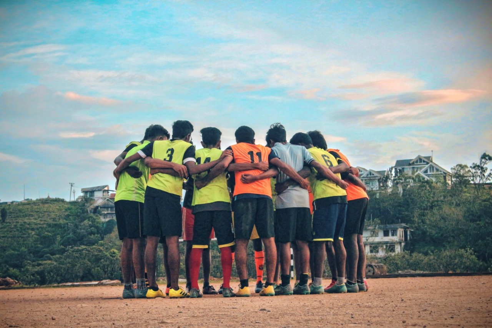

Sports and Games are important aspects of human life, providing both physical and mental benefits and promoting social interaction and community building. Participating in sports and games can also have positive effects on mental health, helping to improve mood, reduce anxiety and depression, and boost self-esteem. In addition to individual benefits, sports and games can also bring communities together, fostering a sense of camaraderie and shared interests. Marian has a long tradition of participating and getting prizes in University, Inter-University, State, National, International level tournaments from its inception itself. We have been awarded with numerous prizes in Kick-boxing, Badminton, Roll-ball, Roller-Hockey, Basketball, Table Tennis, Shooting, Judo, Taekwondo etc. Marian has a Khelo-India center for Badminton. We are sharing our facilities and services to 5-Kerala Police Battalion Kuttikkanam. We conduct training on a regular basis for all the items in sports and games. Our College ground was modernized recently and was inaugurated by Mohammed Rafi, the well-known football player of Kerala Blasters.
